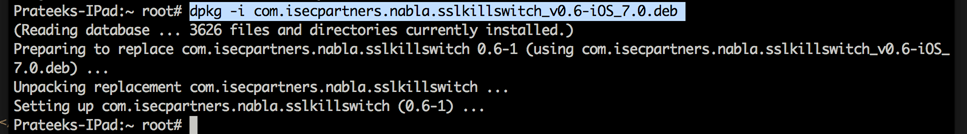
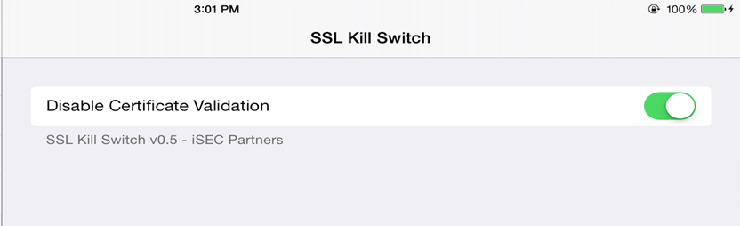
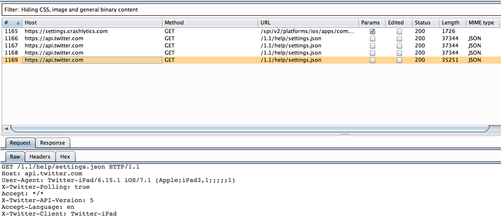
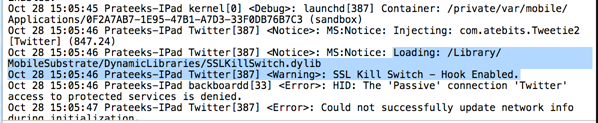

In this article, we will look at how we can analyze network traffic for applications that use certificate pinning. One of the best definitions I found of certificate pinning is mentioned below. It is taken directly from this url.
By default, when making an SSL connection, the client checks that the server’s certificate:
Relying on matching certificates between the device’s trust store and the remote server opens up a security hole. The device’s trust store can easily be compromised – the user can install unsafe certificates, thus allowing potential man-in-the-middle attacks. Certificate pinning is the solution to this problem. It means hard-coding the certificate known to be used by the server in the mobile application. The app can then ignore the device’s trust store and rely on its own, and allow only SSL connections to hosts signed with certificates stored inside the application. This also gives a possibility of trusting a host with a self-signed certificate without the need to install additional certificates on the device.
Certificate pinning is used by many popular applications for e.g Twitter, Square etc. So the question that arises is, how do you bypass this certificate validation that is happening on the client side ? The important thing to note here is all that all the validation is happening on the client side. And since there are frameworks like Mobile Substrate that allow us to patch any method during runtime and modify its implementation, it is possible to disable the certificate validation that is happening in the application.
A POC tool for this by released in Blackhat and it was named iOS SSL Kill Switch. The full presentation can be found here. After some time, the author realized that he was able to inspect traffic from apps that used certificate pinning (for e.g Twitter), but he wasn’t able to see the traffic going through the App Store app. He then realized he needed to patch even more low level methods and kill specific processes in order to inspect traffic going via the App store app. The full writeup for this could be found here and it’s quite interesting, so i suggest you give it a read. Also note that this tool will also be able to disable the default SSL certificate validation, so you don’t need to install a certificate as trusted root as well, which is what we usually do for inspecting traffic over HTTPs.
ETHICAL HACKING TRAINING – RESOURCES (INFOSEC)
To really check that the Twitter app uses certificate pinning, install the Twitter app and route the device traffic through Burp Proxy. Make sure you are inspect traffic via HTTP/HTTPS using the steps mentioned in Part 11 of this series. However, when you open the twitter app and navigate around, the traffic is not captured by Burpsuite.
To inspect the traffic going via Twitter, ssh into your device and download the iOS SSL Kill Switch package from it’s releases link. Also, make sure to install the following packages via Cydia.
Now install the deb package using the command dpkg -i .

Now, respring the device using the command killall -HUP SpringBoard.
Once this is done, go to Settings app. There will be a new menu for SSK Kill Switch and a slider to Disable certificate validation. Make sure the slider is set to on.

Now route the traffic in the device to pass through Burp Proxy. Open twitter app and now you can see all the data going through via the twitter app as well.

To verify that SSL Kill Switch is being injected into the application, go to Xcode -> Devices (I am using Xcode 6), look for your device in the left menu and click on the arrow pointing up in the lower left corner to see the device logs. You will see that SSL Kill Switch is being injected into the application.

Another cool utility that does the same job is trustme. I recommend you check it out.